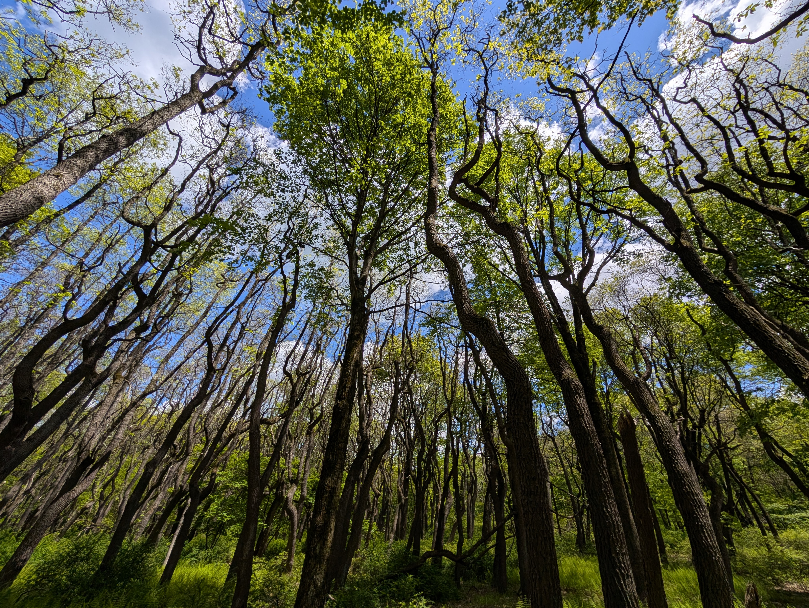

Enjoying the Quiet
May 28, 2025
The month of April and most of May were busy—consistent weekends including dinners, a wedding, events, and overtime. To make up for it, we've used the past few weeks to take time for ourselves.
We found a two-mile community walking path near our house, I've taken Victoria hiking for the first time on the Appalachian Trail, and we've tried to unplug as much as possible.
I like to tell people that I grew up on one side of the Pocono Mountains and currently live on the other. I mean this both geographically and metaphorically. I grew up on the side where houses were spaced farther apart; you were 30 minutes away from most grocery stores, and you were surrounded by hiking trails and waterfalls. Now, I'm 10 minutes away from most grocery stores, but most hiking trails and waterfalls have been replaced with farmland and fairgrounds.
I have a deep love for both, but for the past few weeks of incorporating more hiking and walking into our daily activities, it has felt much less like an either-or when it comes to which side of the Poconos I get to enjoy.
